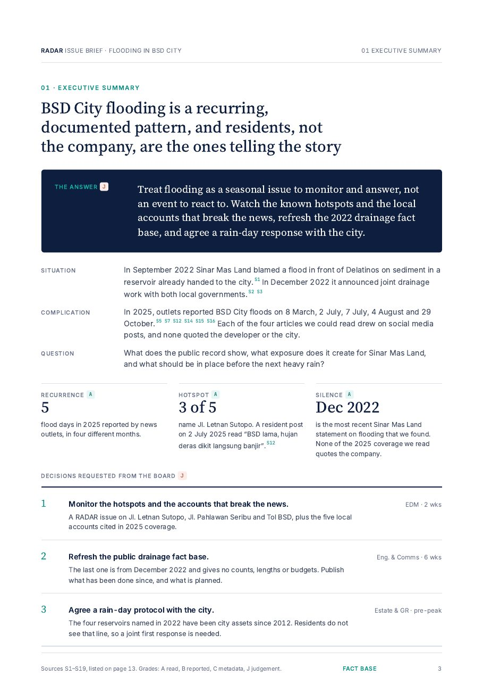

Reports
Board-ready briefs from a run or an issue
US$1 = Rp 16,420 · fixed rate
DP
Draft ready for reviewv3
Fact base · 19 sources · 13 read on page, 6 reported · 8 photos and post screenshotsWritten for the Board.

Quality checks
run before exportAnswer firstThe executive summary opens with the recommendation.
Action titlesEvery page title is a full-sentence takeaway.
Every fact citedEach fact carries a source number, S1 to S19.
Evidence gradedA read on page, B reported, C post metadata, J judgement.
Every exhibit sourced17 exhibits carry a source line.
Photos verifiedEach photo has a confirmed date, place and original credit.
Six grade B sourcesSites blocked automated reading. Check them by hand before external use.
Volume and sentimentNot measured. Needs a live RADAR run on this issue.
Page notes
Answer first, marked as judgement. The three findings are counts from the record, each graded A.